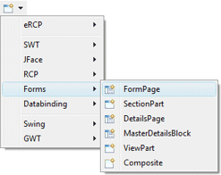
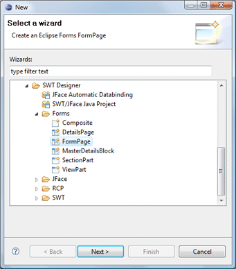
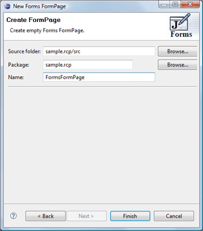
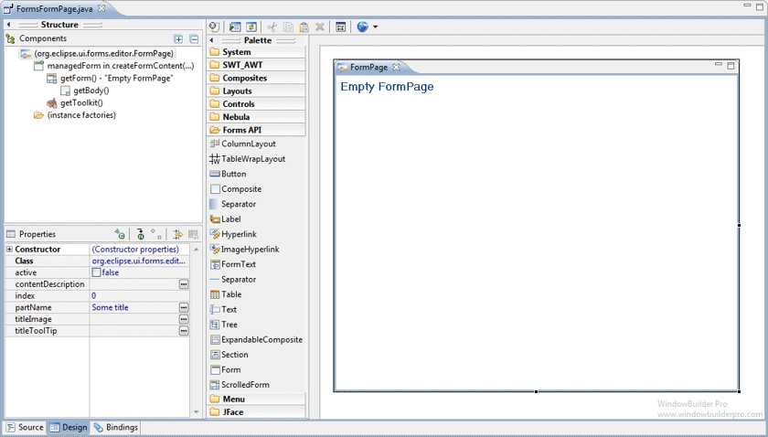

Forms FormPage Wizard
|
Subclasses of the Eclipse Forms FormPage class can be
created using the Forms FormPage wizard. The wizard can be
selected from the drop down Designer wizard menu or from the
Eclipse New wizard.
To use the wizard, select the project source folder and package
to contain the class. Then enter the class name and hit the Finish
button.
For more information on using Eclipse Forms, see the Eclipse
Forms Programming Guide. |


The wizard generates the following code.
-
import
org.eclipse.swt.widgets.Composite;
-
import
org.eclipse.ui.forms.IManagedForm;
-
import
org.eclipse.ui.forms.editor.FormEditor;
-
import
org.eclipse.ui.forms.editor.FormPage;
-
import
org.eclipse.ui.forms.widgets.FormToolkit;
-
import
org.eclipse.ui.forms.widgets.ScrolledForm;
-
- public
class FormsFormPage
extends FormPage {
-
public FormsFormPage(String id, String title) {
-
super(id, title);
- }
-
public FormsFormPage(FormEditor editor, String id,
String title) {
-
super(editor, id, title);
- }
-
protected
void createFormContent(IManagedForm managedForm) {
-
FormToolkit toolkit =
managedForm.getToolkit();
-
ScrolledForm form =
managedForm.getForm();
-
form.setText("Empty FormPage");
-
Composite body = form.getBody();
toolkit.decorateFormHeading(form.getForm());
-
toolkit.paintBordersFor(body);
- }
- }
When editing Eclipse Forms FormPages, a set of specialized
Eclipse Forms widgets is available with their own unique widget palette.
These widgets provide the "flat" look that is a
signature element of the Eclipse Forms API. Standard
widgets and layout managers can also be used although they won't use the
flat look.

|